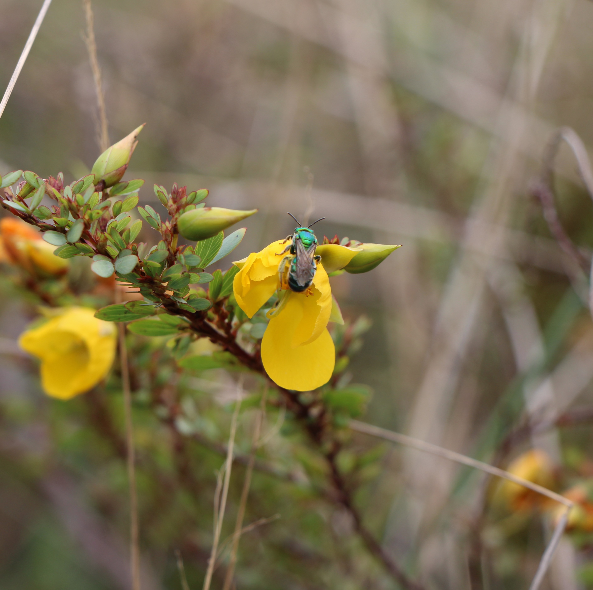
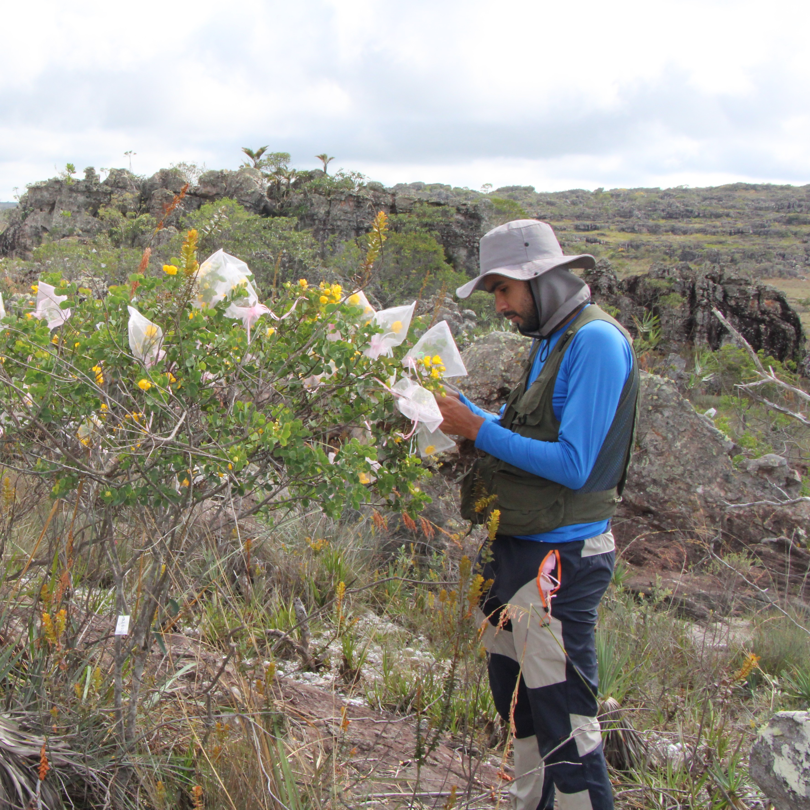

Guilherme Mota
Mestrado pelo Programa de Evolução e Diversidade — Universidade Federal do ABC (UFABC)
- Ecologia da polinização
- Polinização por vibração
- Honestidade floral
Sobre
Seu projeto investiga se características visuais das flores, como tamanho floral, coloração das pétalas e das anteras e refletância UV, anunciam honestamente a quantidade e a qualidade do pólen às abelhas forrageadoras, e se as abelhas utilizam ativamente esses sinais para selecionar quais flores visitar. Estudando o gênero de leguminosas tropicais Chamaecrista como sistema modelo, o projeto combina observações comportamentais em campo, espectrofotometria, modelagem da visão de abelhas e análise nutricional do pólen para compreender como a comunicação planta-polinizador molda a evolução floral e as decisões de forrageamento das abelhas.
Graduado em Licenciatura em Ciências Biológicas pela Universidade Federal de São Paulo (UNIFESP), seus interesses de pesquisa situam-se na interseção entre ecologia da polinização, biologia sensorial e evolução floral. Fora do laboratório, Guilherme gosta de jogar vôlei, ir ao cinema e é um entusiasta dedicado da cultura tailandesa.



